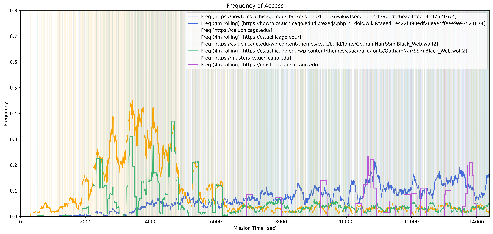
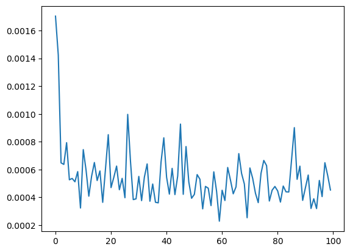
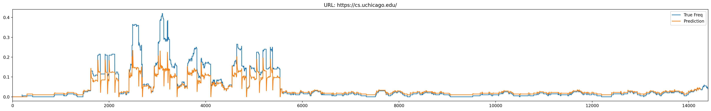
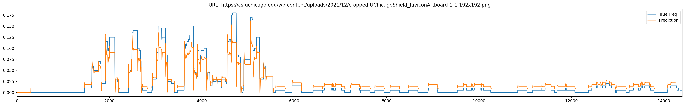
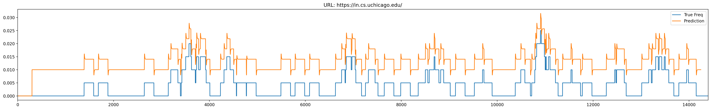

Document for Predicative Eviction for CDN Asset
1. Introduction
Content Delivery Network (CDN) is a widely used technique to speed up page load, distribute data center traffic load to edge servers, and improve user experience browsing the web. However, like any other caches in the world, CDN can only be truly effective if the hit ratio is reasonably high. Multiple cache eviction policies are used in modern CDNs ranging from the traditional LRU to zoned-LRU with privileged zones. However, all of these algorithms are retrospective. For example, LRU uses a doubly-linked hashmap to keep track of the least recently used cache to evict.
In this project, we experiment with the idea of predicative eviction. The method uses time series analysis on the past access traces to predict future access patterns before evicting them from the cache.
2. First Lesser Likely Used Eviction
At the core of the predicative eviction CDN is the FLLU, which is a really simple idea. LRU evicts the asset that is least recently used. On the other hand, FLLU evicts the assets that is lesser likely to be used in the future. This aims to eliminate the problem that there is some possibility that a least recently used cache will be used in the near future while not least recently used will not.
We use LSTM to infer the access pattern of the next 2.5 minutes given the the access pattern in the past 5 minutes. We then start looking at cached assets one by one. We will evict the first asset encountered that has a summed future probability score of less than a threshold. The algorithm is described in the following pseudo code section.
while cdn_size + new_asset_size > cdn_capacity:
for asset in cached_asset:
if sum(future_prob(asset)) < threshold:
evict(asset)
1. Methodology
The project efforts are separated into three parts with their implementation details explained below.
3.1 Trace Generation
We have realized from the start of the project that real-world CDN traces are hard to obtain if not possible. Therefore, we decided that we are going to complete the project on synthetic traces. Three tech stacks are used to capture network access traces
Selenium: navigate the webpages and process HTML
Browsermob-proxy: serve as the proxy between Selenium and browser driver to capture Http Archive Format(HAR), which contains traces to all the assets a webpage requests and loads upon visit
A pub/sub architecture generator: we simulate concurrent user access to a website through a multi-threaded pub/sub architecture trace generator.
The generator is implemented with the following psedocode
fifo_queue := []
populate_queue(fifo_queue, num_user)
foreach num_worker:
while fifo_queue not empty:
event := fifo_queue.pop()
# Visit webpage and generate HAR
visit_website(event)
# Generate next event
next_event := gen_next_event(event)
fifo_queue.push(next_event)
We can then initialize the number worker to be something appropriate. event contains a few critical attributes such as the url that we want to visit, the current simulated timestamp, etc. It is important to note that the time is simulation not, not wall time. Number of user controls how many concurrent user access we are simulating.
3.1.1 User Access Pattern
We also need to assume some access patterns for our users. Due to project time constraint, we can only manage to simulate simple user behaviors. The following statement defines the user behavior.
User will start a browsing session. A browsing session consists of a series of bursty clicks. After each click, the user needs sometime to read through the newly loaded website. The intervals between the bursty clicks are modeled by \(\mathcal{N}(1m,0.5m)\). The number of clicks in a session is modeled by \(\text{rand}(1,10]\). After a each browsing session, the user will take a rest before starting the next browser session. The rest interval is modeled by \(\mathcal{N}(40m,20m)\). A single user will continue to engage in these browsing sessions until the simulation mission time is reached (such as 5 hours).
With the num_user parameter properly configured, we can then simulate concurrent user access behaviors with the above definition defining the actions of individual users. However, do note that this access pattern is incredibly naive and primitive, and if we want more realistic traces, we probably should consider using more complex rules and distributions than simple normal.
3.2 Model Training
After the trace is generated, we perform a rolling window smoothing on the access frequency of each asset such that a recurrent model can learn meaningful weights than just outputting 0s. A rolling window size of 400 is used, and a selected sample of assets will have their smoothed access frequency shown in the graph below. The semi-transparent histographs in the background shows the actual non-smoothed access frequency while the the line shows smoothed frequency.
{kind=link}
When using LSTM to predict time series, we must be mindful of the input and output window of the model. For example, if we let the LSTM uses the previous \(x\) data points to predict \(1\) following data point, the model will always tend to just return the value of the last data point, as that makes sense. Therefore, in order to let LSTM capture longer-range relations in the smoothed data, we decided that our LSTM model will use the previous 300 data points to predict the next 150 data points, which translates to using the access pattern in the previous 5 minutes to predict the access pattern in the following 2.5 minutes.
Our model consists of two LSTM networks concatenated together to capture the temporal correlation in the data, and a single layer MLP with hidden size of 50, and a output layer of 150 as mentioned above. Since we wish the model to output a similar prediction compared to the ground truth data, MSE loss function is used.
3.2.1 Loss Function Design
Through training the model we have discovered that sometimes the model have the tendency to output slightly negative values for assets that have a smoothed access frequency that is closer to 0, due to MSE loss’s property of being un-signed. Therefore, we have appended a new term to the loss function as follows
Essentially, if any of the output value is negative, we penalize the model hard. This loss design proves to work well during training.
3.2.2 Training
We select 3 asset access frequency as the training data for the model, which consists to about 60,000 data points. We train the aforementioned LSTM model for 100 epochs and reached a loss value of 0.00045285.
{kind=link}
We then qualitatively examine the model quality by inferring later data given previous ground truth, and we see that our trianed model is able to output correct predictions
  {kind=link}
{kind=link}
{kind=link}
3.3 CDN Simulation
3.3.1 Architecture
We initialized a simulated CDN cache with a size of 100 Mb and a hashmap to contain those assessed website assets. The total number of access requests and number of hits are stored for later hit rate calculation.
3.3.2 Implementation of LRU
We first use user_600_hour_6_cs.uchicago.edu.har as a test dataset to measure the CDN hit rate. This dataset starts at 2023-11-27 21:27:41, and we set it to end at 2023-11-27 23:27:41. In the case of LRU, the least recently accessed assets in the history is evicted when the cache is full.
The hit rate in the end is around 84.30%
3.3.3 Implementation of proposed FLLU
In the case of FLLU eviction, the CDN will check the possibility of being used in the future for all the assets cached inside this CDN and evict the least likely to be used assets. Specifically, in the eviction stage, the fetch function first checks the current time as a window end time, and the window lasts for 150 seconds. Then, we will extract the 150 seconds before the window end time in the history data we captured; in this case, it is from user_600_hour_6_cs.uchicago.edu.har. Based on the 150-second history, we will predict the usage of this asset in the future 150 seconds. If the sum of all the prediction usage in the next 150 seconds is less than 1, we assume this asset is not likely to be used again; we will evict it and not continue to predict the following assets. Skip predicting all assets, reducing the time-consuming inference and increasing the efficiency of this algorithm in general.
The hit rate for CDN with prediction in the end is around 85.71%.
4. Analysis
We can see from the result above that FLLU does not provide any tangible improvements on top of LLU. We want to explore several possibilities on why this is the case
Correlation between least recently and lesser likely used: it is possible that if an asset is least recently used, it would also be lesser likely to be used. As FLLU aims to improve the edge case scenario of least recently used asset will actually be used soon, depending on the access pattern, this corner case might be too marginal to show substantial improvements.
FLLU, not LLU: originally, we planned to implement LLU instead of FLLU. For LLU, we wish to search through all the cached asset, compute their future probability score, and evict the asset with the smallest score. However, during our experiments and implementation, we found that this approach’s computational cost is prohibitively expensive and makes the algorithm infeasible. However, ignoring the prohibitive cost, it is possible that LLU would discover the global optimal asset to evict, improving the hit ratio.
Simplistic access pattern: as mentioned in the design section for trace generator, our simulated user behavior is not exactly smart. This simplistic access behavior might also contribute to the ineffectiveness of FLLU. For example, most of the asset exhibits a single peak.
However, although the improvement is not substantial, we can see that predictive algorithm does manage to improve the hit ratio compared with LRU. Therefore, it is apparent that future information will help CDN cache performance, with degree depending on the algorithm implementation and access pattern.
5. Future Work
This is a simulation based on random asset access, and the accessing pattern is different from human behaviors. In general, we assume human behaviors are more regular, easy-to-capture, and obvious preference behaviors. Those features make human behaviors less random and may provide better predictions.
We simulated a CDN but did not really consider the time used to add-delete cached assets. Thus, this simulation is only an experimental product that is slightly distant from the real-world product.
Also, the threshold of less than one access in the following 150 seconds is only a number manually decided. Different thresholds may lead to better performance, which well balances the time saved and used by prediction. Thus, in the future, a threshold selection is necessary by doing experiments with different thresholds under different dataset contexts.